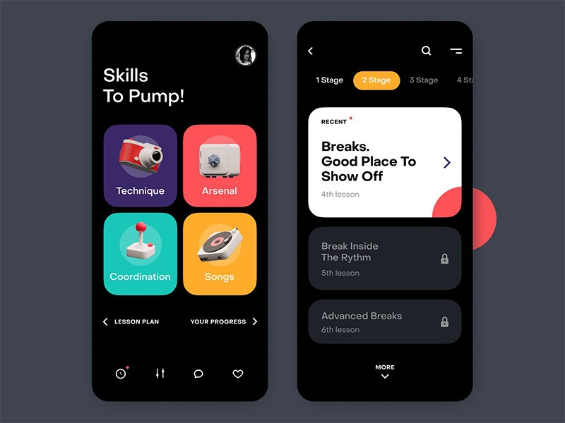

Learn About Mobile Devices

Smartphone in Use: A person using a smartphone for educational purposes, like reading or attending a class.
1.1 How to Use a Mobile Device for Learning
Mobile devices can transform how you approach education, but it's essential to use them effectively. Below is a step-by-step guide to help you get started:
Step 1: Set Up Your Device
- Choose Educational Apps: Install apps relevant to your learning goals (e.g., Duolingo for languages, Khan Academy for general subjects).
- Create Folders: Organize your educational apps into folders for easy access, such as "Math", "Languages", or "Science".
- Sync Across Devices: Use cloud services like Google Drive or iCloud to synchronize your notes, assignments, and progress across devices.
Step 2: Connect to the Internet
- Wi-Fi Access: Ensure you have a stable internet connection, especially when streaming lectures, downloading e-books, or joining online classes.
- Data Management: If you're using mobile data, monitor your usage to avoid exceeding your plan limits.
Step 3: Customize Your Device for Learning
- Adjust Notifications: Turn off non-essential notifications that may distract you during study sessions, and enable alerts for deadlines and reminders.
- Organize Your Schedule: Use calendar apps like Google Calendar or Apple Calendar to track assignments, classes, and personal study time.
- Use Screen Time Limits: Set up screen time limits or use focus modes to stay productive without getting distracted by non-educational content.
Step 4: Engage with Learning Platforms
- Explore E-Learning Platforms: Websites like Coursera, edX, and Khan Academy are optimized for mobile use. You can complete entire courses, view lectures, and participate in discussions directly from your phone or tablet.
- Join Study Groups: Use apps like Slack or Microsoft Teams to collaborate with classmates or join virtual study groups for discussions and brainstorming.
1.2 Key Features
- Portability: Designed for easy transport, mobile devices fit comfortably in bags and pockets, making learning accessible on the go.
- Touchscreen Interface: The intuitive touchscreen allows for easy navigation and interaction with content, making it user-friendly for individuals of all ages.
- Connectivity: Mobile devices provide seamless access to the internet, enabling users to download resources, join online classes, and access e-books from anywhere.
- Multimedia Capabilities: These devices support a variety of media formats, allowing for interactive learning experiences through videos, podcasts, and graphics.
1.3 Educational Uses
- E-Books and Audiobooks: Mobile devices facilitate access to thousands of e-books and audiobooks, allowing learners to explore diverse subjects at their convenience.
- Online Learning Platforms: Websites like Coursera, Udemy, and Khan Academy provide courses accessible via mobile apps, empowering users to learn at their own pace.
- Learning Apps: Applications like Duolingo for language learning, Kahoot for quizzes, and Quizlet for flashcards make studying interactive and fun.
- Social Learning: Platforms like Facebook, Reddit, and specialized forums allow learners to engage with peers, ask questions, and share resources.
1.4 Tips for Effective Use
- Organize Your Apps: Categorize educational apps into folders to streamline access and improve productivity.
- Utilize Notification Settings: Turn on notifications for educational apps to stay updated on course deadlines, quizzes, and new content.
- Balance Screen Time: Use screen time management tools to ensure a healthy balance between learning and leisure activities.
1.5 Additional Tips for Advanced Users
- Use a Stylus for Note-Taking: If you have a tablet or phone with stylus support, apps like OneNote or Notability make handwritten notes a breeze, allowing you to annotate diagrams and highlight critical points.
- Split-Screen Multitasking: Some mobile devices support split-screen functionality, allowing you to take notes while watching lectures or following along with a textbook.
- Offline Access: Many e-learning platforms allow users to download materials for offline viewing. Make sure to download videos, PDFs, or other study materials when you have access to the internet so that you can review them without using data.

Mobile App Interface: A screenshot of a popular educational app interface displayed on a smartphone.

Group of People with Smartphones: A diverse group of individuals engaged with their smartphones, representing collaborative learning.